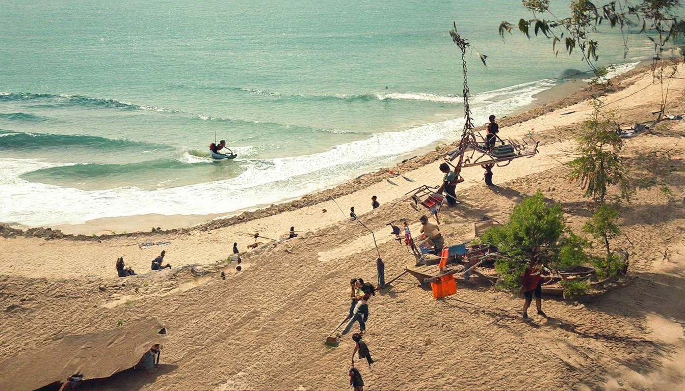
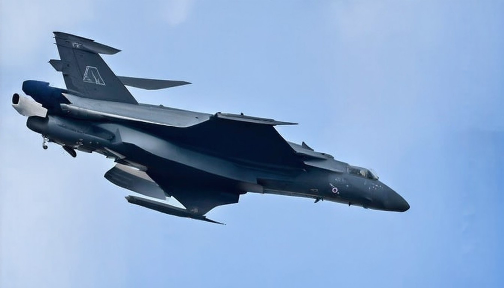

国际新闻- 美国之音中文网
# 国际新闻 - 美国之音中文网. * [跳转到内容](https://www.voachinese.com/p/6143.html#content). * [跳转到导航](https://www.voachinese.com/p/6143.html#navigation). * [美国](https://www.voachinese.com/US "美国"). * 国际 [最
2026年04月06日 · 全球热点速递
← 返回今日新闻# 国际新闻 - 美国之音中文网. * [跳转到内容](https://www.voachinese.com/p/6143.html#content). * [跳转到导航](https://www.voachinese.com/p/6143.html#navigation). * [美国](https://www.voachinese.com/US "美国"). * 国际 [最
[新闻](https://news.google.com/?hl=zh-CN&gl=CN&ceid=CN%3Azh-Hans). [新闻](https://news.google.com/?hl=zh-CN&gl=CN&ceid=CN%3Azh-Hans). [登录](https://accounts.google.com/ServiceLogin?passive=1209600&continue

# 今天全世界都在看的新闻 2026.4.2. 当地时间4月1日，美国总统特朗普发表讲话，自行宣称对伊朗战事取得“快速、决定性、压倒性胜利”。特朗普称，伊朗发射导弹和无人机的能力已遭到“极大削弱”，武器工厂和火箭发射装置已“所剩无几”。特朗普在演讲中还强调，对伊朗的打击中不需要他国协助。. 4月1日，日本首相高市早苗在东京与到访日本的法国总统马克龙举行了日法首脑会谈，双方发表了一份联合声明，确认在
67歲後這6 種手術千萬別輕易做！ · 【深度揭秘】中東戰局徹底失控！ · 華人神探李昌缽離世！ · 性生活越多越長壽，還是越少越長壽？
- 欧盟能源专员：中东冲突致能源冲击长期化，评估限量供油、动用战略储备等选项。 - 法国推燃油闪贷救小微企业；高油价重塑春假旅游，民众就近出行。 - 意大利
## [美伊戰爭將落幕？川普：相信周一前能達成協議](https://www.worldjournal.com/wj/story/121468/9423831?from=wj_msg "美伊戰爭將落幕？川普：相信周一前能達成協議"). ## [黃曉明違法道歉 帶9歲兒子大街騎自行車被檢舉](https://www.worldjournal.com/wj/story/121233/9423717?f
# 【时事金扫描】伊朗导弹城连爆8小时 中东最高大桥被炸断. 【新唐人北京时间2026年04月03日讯】大家好，欢迎收看“时事金扫描”。我是金然。如果说昨天美国“重返月球”是人类科技的巅峯时刻，那今天4月2号伊朗战场则预示着全球政治格局大变动的转折时刻。这是“直击伊朗大战”系列特别节目的第30集。要想了解这场搅动世界的伊朗战争的“收网大戏”，请订阅我们的频道，支持我们，点赞、留言并且推荐转发。.
* [大陆](https://www.epochtimes.com/gb/nsc413.htm). * [美国](https://www.epochtimes.com/gb/nsc412.htm). * [香港](https://www.epochtimes.com/gb/ncid1349362.htm). * [国际](https://www.epochtimes.com/gb/
[BBC News, 中文](/zhongwen/trad). # 國際. * ## [特朗普「關稅戰」一週年： 全球經濟如何在四個方面被改變](https://www.bbc.com/zhongwen/articles/cx2el8zd3d4o/trad). * ## [美國「阿提米絲2號」火箭成功發射，太空人奔向月球——接下來會發生什麼？](https://www.bbc.com/zhongw

根據川普總統第一任內簽定「美加墨貿易協定」 · 美國總統川普2日在白宮。 · F-15E檔案照，非此次失事戰機。 · 這張照片據稱，美國在伊朗執行尋找一名受困飛行員 · 舊金山氣候溫和